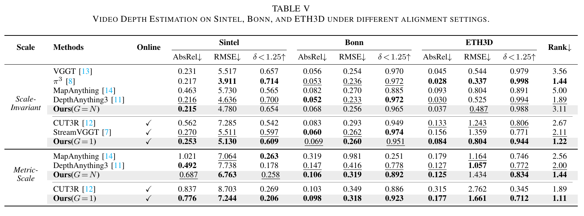
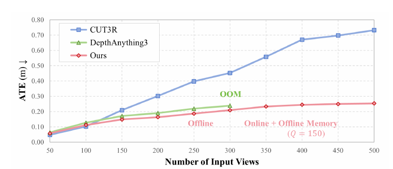
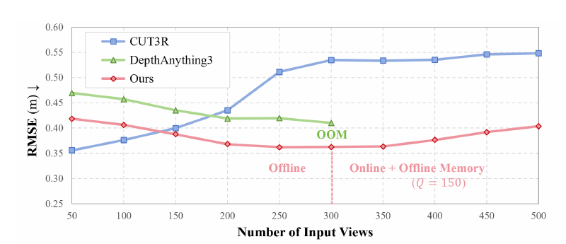
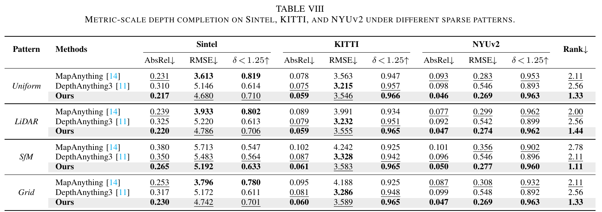
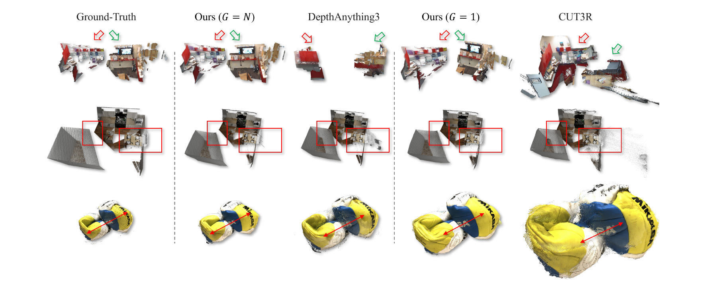

MULTIMODAL PERCEPTION · 2026
UniT
Unified Geometry Learning with Group Autoregressive Transformer
- 1Intelligent Transportation Thrust, Systems Hub, HKUST(GZ)
- 2National Key Laboratory of Human-Machine Hybrid Augmented Intelligence, Xi'an Jiaotong University
- 3Applied Science, Amazon.com, Inc.
- †Corresponding authors
OVERVIEW
One model for geometry perception
UniT is a unified feed-forward model that reformulates a wide range of geometry perception capabilities into a single framework, covering diverse view configurations, modality combinations, metric-scale perception, and long-horizon scalability. It supports both online and offline inference over an arbitrary number of views, flexibly incorporates auxiliary modalities such as camera parameters and depth maps, recovers geometry at metric scale in physical units, and maintains bounded complexity over long horizons in in-the-wild environments.
-
01
Any view configuration
Online video, binocular streams and offline multi-view sets, over any number of views.
-
02
Any modality combination
Camera intrinsics, extrinsics and depth maps can be added whenever they are available.
-
03
Metric-scale perception
Geometry is recovered in physical units rather than up to an unknown scale.
-
04
Long-horizon scalability
Complexity stays bounded as sequences grow in in-the-wild environments.

EXAMPLES
Reconstructions in the wild
Point clouds reconstructed by UniT, from campus scenes at HKUST(GZ) to public driving and synthetic sequences. Hover or tap a clip to play it.
- HKUST(GZ) · INTR
- HKUST(GZ) · Toy
- HKUST(GZ) · Red Bird
- Drift
- GTA SfM
- KITTI
Explore the point clouds interactively and measure real-world distances on the original project page
LIVE DEMO
Run UniT on your own images
The Hugging Face Space runs the released model in your browser, no setup required.
RESULTS
Evaluated across tasks and settings
Compared with VGGT, π3, MapAnything, DepthAnything3, CUT3R and StreamVGGT under both scale-invariant and metric-scale settings.
- Benchmarks
- 10
- Tasks
- 7
- Baselines
- 6
Scene-level 7-Scenes and NRGBD, and object-centric DTU.

Synthetic outdoor Sintel, and real-world indoor TUM-Dynamic and ScanNetV2.

Sintel, and real-world Bonn and ETH3D.

Sintel, KITTI and NYUv2.

NRGBD with sequence lengths from 50 to 500 frames, in steps of 50.


Arbitrary combinations of depth maps, intrinsics and extrinsics on 7-Scenes, ETH3D and ScanNetV2.

Raw depth maps with four sparse patterns on Sintel, KITTI and NYUv2.


CITATION
@misc{wang2026unit,
title={UniT: Unified Geometry Learning with Group Autoregressive Transformer},
author={Haotian Wang and Yusong Huang and Zhaonian Kuang and Hongliang Lu and Xinhu Zheng and Meng Yang and Gang Hua},
year={2026},
eprint={2605.21131},
archivePrefix={arXiv},
primaryClass={cs.CV},
url={https://arxiv.org/abs/2605.21131},
}